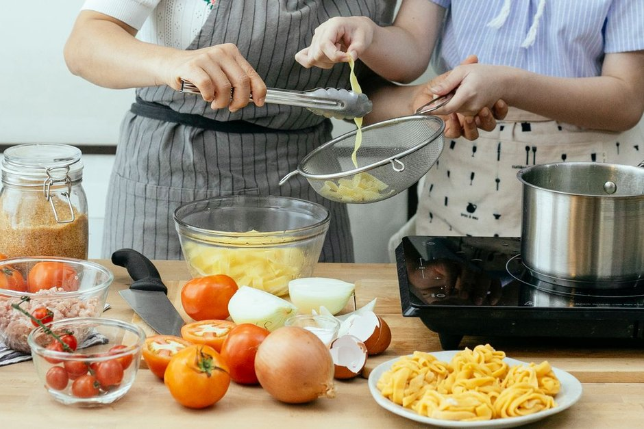

Comment optimiser son budget alimentaire en étudiant avec des astuces de cuisine

Photo: Katerina Holmes / Pexels
L'alimentation est l'un des postes de dépense où l'on peut économiser le plus. Voici des habitudes simples pour dépenser moins sans manger moins bien.
1. Planifiez vos repas
Prenez dix minutes par semaine pour choisir vos repas, vérifier le garde-manger et dresser une liste. Vous achetez moins d'imprévus et gaspillez moins.
2. Comparez les prix à l'unité
Regardez le prix au kilo ou au litre affiché en rayon. Les grands formats ne sont avantageux que si vous les consommez avant qu'ils se gâtent.
3. Privilégiez les produits de saison et surgelés
Les fruits et légumes de saison sont souvent moins chers. Les légumes et fruits surgelés se gardent longtemps et évitent le gaspillage.
4. Misez sur les légumineuses et les céréales
Lentilles, pois chiches, haricots, riz et avoine fournissent beaucoup de nourriture pour peu d'argent. Remplacer une partie de la viande par des légumineuses fait baisser la facture.
5. Préparez à l'avance
Cuisinez des portions supplémentaires et congelez-les. Cela évite les repas coûteux pris à l'extérieur quand vous manquez de temps.
6. Comprenez les dates sur les emballages
La mention « meilleur avant » indique la qualité, pas la sécurité : un aliment peut rester bon un peu après. En revanche, ne mangez jamais un aliment moisi, qui sent mauvais ou dont l'aspect est suspect. Jetez les restes cuits conservés depuis plus de deux à trois jours.
7. Cuisinez à la maison avec les bonnes bases
Fabriquer ses sauces, sa soupe ou ses vinaigrettes coûte moins cher que les produits préparés. Une poêle, une casserole et un bon couteau suffisent.
8. Profitez des offres sans vous laisser piéger
Les rabais sont utiles pour des produits que vous achetez déjà. Les coupons et les applications des supermarchés peuvent faire économiser, mais n'achetez pas un produit juste parce qu'il est en solde.
Ces habitudes vous aident à mieux manger tout en gardant le contrôle de votre budget.
Produits recommandés
En tant que Partenaire Amazon, je réalise un bénéfice sur les achats remplissant les conditions requises.